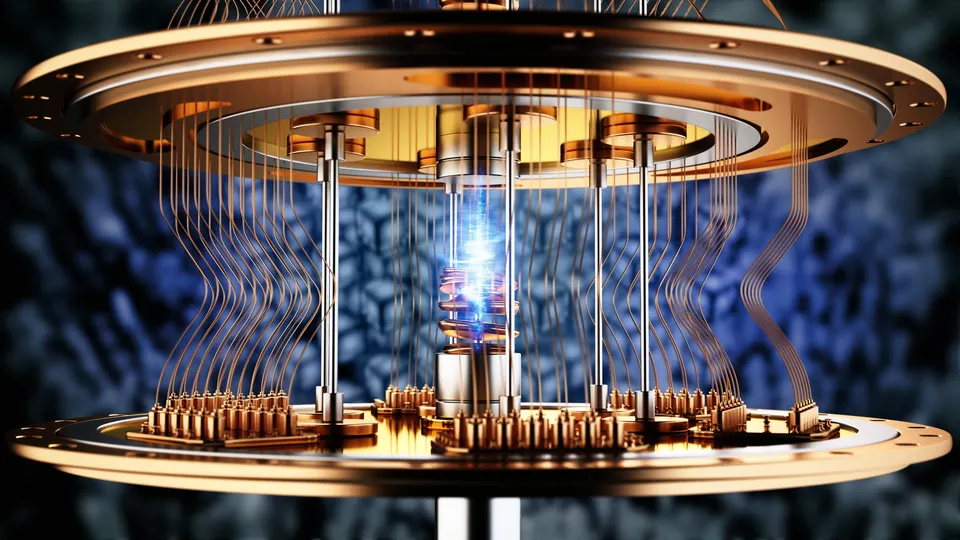
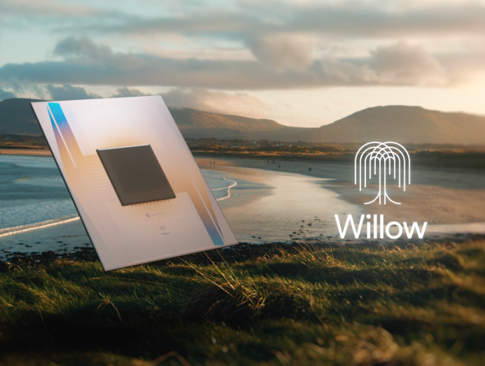

Every once in a while, a new technology comes along that really makes you take a second look and wonder if what you just read could possibly be true. Google's Willow chip is exactly that — a computer so powerful that it can solve a problem previously predicted to take trillions of trillions of years in just five minutes. In fact, according to Google, it's a problem so complex that current supercomputers would need more time than the entire history of the universe to solve. Seems mind-boggling at first—but this is just the start of today's quantum computing revolution. If the Willow chip's claims hold up, this breakthrough could represent a pivotal moment, one that marks the transition from theoretical promise to real-world capability.
Understanding the Quantum Difference
So what exactly is quantum computing and why does it matter? Traditional computers work with bits that are either 0 or 1 (binary). Quantum computers, however, work a little differently. Their quantum bits, or qubits, can be 0, 1, or both at the same time (a bit confusing I know). This unique property, called superposition, allows quantum computers to process complex calculations exponentially faster than classical systems for certain tasks. Combined with another phenomenon known as entanglement, quantum computing holds the promise of revolutionizing fields like cryptography, materials science, and artificial intelligence.
The Willow Chip: A Quantum Breakthrough
The biggest challenge in quantum computing has always been error rates. Qubits are incredibly sensitive and much more error-prone than traditionally reliable binary encoding. But Google's Willow chip does something truly remarkable and revolutionary—it becomes more stable and less error-prone as you add more qubits. Of course, this is counterintuitive, as adding more qubits has historically led to increased error rates due to entanglement complexities. Yet, Google claims to have achieved this through advanced error-correction techniques, hinting at a future where quantum systems could scale up without the same limitations that have truly challenged even the most prominent experts and players in the field for decades. If this stability continues to improve, though, it could be the key to making large-scale quantum computers genuinly viable and readily available to the general public at large for everyday use.
Real-World Impact
So, what does this mean for us? Well, quantum computing (and especially at this supposed scale) has the potential to completely revolutionize drug discovery, clean energy like nuclear fusion, and even financial modeling. Potential use cases involve developing life-saving medicines and vaccines faster, solving complex climate challenges seemingly instantaneously, or predicting financial markets with unprecedented accuracy and speed. Beyond these practical applications, quantum computing might also unlock entirely new scientific fields, enabling us to tackle problems that were previously deemed unsolvable. It's not just about speed - but also discovering and indentifing entirely new fields and areas of study/innovation.
What This Means for Google and Tech
This is of course a huge deal for Google. In fact, their stock jumped 5% after the Willow announcement. While competitors like Microsoft and IBM are making some progress, Google's approach to error correction and of course being one of the first to make such a huge breaktrough, gives them a real edge. Markets reacted accordingly positively and paired with the AI boom of the past year, it seems like a great time to own or buy Google stock.
The Future
Now, of course, we won't have quantum computers invented by tomorrow or even in a year. In fact, despite this monumental progrss, it seems that, generally speaking, we are still early on in the process of truly developing this technology to its full potential. Many challenges remain, including error correction, scaling up qubits, and ensuring stability in these delicate systems. However, the steady advancements in both hardware and algorithms signal that quantum computing could redefine the technological landscape within the next few decades. It's too early too tell where this technology goes from here. But one thing's for sure: quantum computing will be here sooner than we know it - and it'll be here to stay.